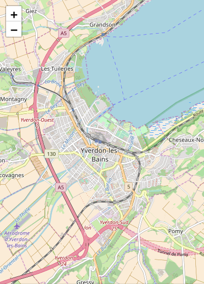
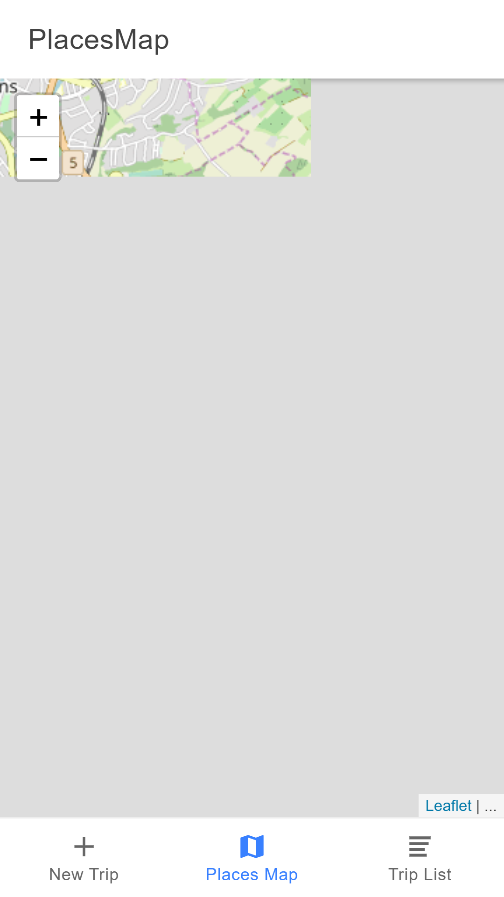

# Ionic Extras Useful tools to add to an Ionic application. **You will need** - A running [Ionic][ionic] application **Recommended reading** - [Ionic](../ionic/) - [Angular](https://mediacomem.github.io/comem-masrad-dfa/latest/subjects/angular?home=https%3A%2F%2Fmediacomem.github.io%2Fcomem-devmobil%2Flatest) --- ## Geolocation .breadcrumbs[<a href="#1">Ionic Extras</a>] The [HTML Geolocation API][html-geolocation] allows the user to provide their geographical location to web applications. Since an Ionic app is a web app, you can use it directly. However, you can also use the [Ionic native geolocation][ionic-native-geolocation] plugin (and the related Cordova plugin). The Cordova plugin provides a JavaScript API to use native geolocation capabilities when the HTML Geolocation API is not available ; the Ionic Native plugin wraps this JavaScript API in an Angular Service for usage in an Ionic/Angular app. Install the plugins by following [the documentation][ionic-native-geolocation] adapted for wether you're using Cordova or Capacitor in your app. --- ### Registering the Geolocation service with Angular .breadcrumbs[<a href="#1">Ionic Extras</a> > <a href="#2">Geolocation</a>] The `@ionic-native/geolocation` plugin provides an **Angular service** named `Geolocation` that you can use to locate the user. To be able to **inject** it in your application's components or services, you must add that service to your module's **providers**. For example, you may add it to `AppModule` in `src/app/app.module.ts` in a standard starter project: > **Be extra sure to check that the import path ends with `/ngx`**, since we are using Angular in our case. > > See https://ionicframework.com/docs/native/overview#angular ```ts // Other imports... *import { Geolocation } from '@ionic-native/geolocation/ngx'; @NgModule({ // ... providers: [ // Other providers... * Geolocation ] }) export class AppModule {} ``` --- ### Injecting the Geolocation service .breadcrumbs[<a href="#1">Ionic Extras</a> > <a href="#2">Geolocation</a>] Now that the `Geolocation` service is registered, you can inject it in one of your components or services. Here's an example of how you would inject it in a sample `ExamplePage` component: ```ts // Other imports... *import { Geolocation } from '@ionic-native/geolocation/ngx'; @Component({ selector: 'page-example', templateUrl: 'example.html', }) export class ExamplePage { // ... constructor( // Other injections... * private geolocation: Geolocation ) {} // ... } ``` --- ### Getting the user's location .breadcrumbs[<a href="#1">Ionic Extras</a> > <a href="#2">Geolocation</a>] Once that's done, obtaining the user's current geographic coordinates once is as simple as calling the service's `getCurrentPosition()` method: ```ts // ... import { Geoposition } from '@ionic-native/geolocation/ngx'; export class ExamplePage implements OnInit { // ... ngOnInit() { // ... // Geoposition is an interface that describes the position object * this.geolocation.getCurrentPosition().then((position: Geoposition) => { * const coords = position.coords; * console.log(\`User is at ${coords.longitude}, ${coords.latitude}`); * }).catch(err => { * console.warn(\`Could not retrieve user position because: ${err.message}`); * }); } // ... } ``` The `getCurrentPosition()` method is an **asynchronous** operation which returns a promise, so you have to call `.then()` to be notified when the location is available. You should also call `.catch()` to be notified if there's a problem retrieving the location. --- ### Tracking the user's location .breadcrumbs[<a href="#1">Ionic Extras</a> > <a href="#2">Geolocation</a>] If you want to periodically be notified of the user's current geographic location, you should the `watchPosition()` method of the `Geolocation` service. Note that this method returns an **observable** instead of a **promise**. Hence you needing to `subscribe()` to it to get notified of the change: ```ts // ... export class ExamplePage implements OnInit { // ... ngOnInit() { // ... * const trackingSubscription = this.geolocation.watchPosition().subscribe({ * next: (position: Geoposition) => { * const coords = position.coords; * console.log(\`User is at ${coords.longitude}, ${coords.latitude}`); * }, * error: err => { * console.warn(`Could not retrieve user position because: ${err.message}`); * } * }); } // ... } ``` --- ### Allowing the brower to retrieve the user's location .breadcrumbs[<a href="#1">Ionic Extras</a> > <a href="#2">Geolocation</a>] When developing locally with `ionic serve`, the browser will ask for permission to get the user's location. Click **Allow**: <p class='center'><img src='images/browser-allow-geolocation.png' class='w50' /></p> --- ### Geolocation on insecure origins .breadcrumbs[<a href="#1">Ionic Extras</a> > <a href="#2">Geolocation</a>] If you get the following warning: ```txt *getCurrentPosition() and watchPosition() no longer work on insecure origins. *To use this feature, you should consider switching your application to a *secure origin, such as HTTPS. See https://goo.gl/rStTGz for more details. ``` It's because your Ionic app is not running on localhost but on your IP address (e.g. you are on `http://192.168.1.100:8100` in your browser's address bar), and getting the user's location over unencrypted HTTP is **no longer allowed on insecure origins**. You should run your Ionic app on localhost to solve this issue: ```bash $> ionic serve --address localhost ``` --- ## Leaflet .breadcrumbs[<a href="#1">Ionic Extras</a>] There are many JavaScript map libraries, each with their own advantages. For this tutorial, we'll use [Leaflet][leaflet] as it's one of the most popular open source libraries. We'll also use [ngx-leaflet][ngx-leaflet], which is an Angular wrapper around Leaflet. You can install both with npm: ```bash $> npm install leaflet @asymmetrik/ngx-leaflet ``` As we are in a TypeScript project and Leaflet is not written in TypeScript, you'll also need to install its [type definitions][definitely-typed]: ```bash $> npm install --save-dev @types/leaflet ``` --- ### Importing Leaflet styles .breadcrumbs[<a href="#1">Ionic Extras</a> > <a href="#9">Leaflet</a>] For the map to display correctly, you need to add Leaflet CSS to your project. To do so, open your `angular.json` file that should sit at the root of your project's files, and add the path to the leaflet css file to the `projects.app.architect.build.options.styles` array, like so: ```json { // ... "styles": [ // Previous styles * "node_modules/leaflet/dist/leaflet.css" ], // ... } ``` --- ### Importing Leaflet assets .breadcrumbs[<a href="#1">Ionic Extras</a> > <a href="#9">Leaflet</a>] Along with the styles, you'll also need to import the Leaflet's assets (e.g. the marker icon). This is also done in `angular.json`. Add the following object to the `projects.app.architect.build.options.assets` array: ```json { // ... "assets": [ // Previous assets definition { * "glob": "**/*", * "input": "node_modules/leaflet/dist/images", * "output": "leaflet/" } ], // ... } ``` --- ### Registering the Leaflet module with Angular .breadcrumbs[<a href="#1">Ionic Extras</a> > <a href="#9">Leaflet</a>] To use the [ngx-leaflet][ngx-leaflet] library, you must add its `LeafletModule` to your application's module in `src/app/app.module.ts`: ```ts // Other imports... *import { LeafletModule } from '@asymmetrik/ngx-leaflet'; @NgModule({ // ... imports: [ // Other imports... * LeafletModule.forRoot() ] // ... }) export class AppModule {} ``` > Note the call to `forRoot()`, since we are in our root module And also import it in the module that declares the page displaying your map: ```ts // Other imports... *import { LeafletModule } from '@asymmetrik/ngx-leaflet'; @NgModule({ // ... imports: [ // Other imports... * LeafletModule ] // ... }) export class ExamplePageModule {} ``` > Note that in this case, we **do not** call `forRoot()`, since we are importing the module in a non-root module --- ### Displaying a map .breadcrumbs[<a href="#1">Ionic Extras</a> > <a href="#9">Leaflet</a>] To display map, you need to define some basic map options. Here's how you could add them to a sample `ExamplePage` component: ```ts // Other imports... *import { latLng, MapOptions, tileLayer } from 'leaflet'; @Component(/* ... */) export class ExamplePage { * mapOptions: MapOptions; constructor(/* ... */) { // ... * this.mapOptions = { * layers: [ * tileLayer( * 'http://{s}.tile.openstreetmap.org/{z}/{x}/{y}.png', * { maxZoom: 18 } * ) * ], * zoom: 13, * center: latLng(46.778186, 6.641524) * }; } } ``` --- #### Adding the map to the component's template .breadcrumbs[<a href="#1">Ionic Extras</a> > <a href="#9">Leaflet</a> > <a href="#13">Displaying a map</a>] To display the map in your page's template, you need to add the `leaflet` directive to a `<div>` on the page. You can pass the options to this map by binding an object to the `leafletOptions` directive: ```html <div class="map" leaflet [leafletOptions]="mapOptions"></div> ``` .grid-70[ The `leaflet` directive instructs the `ngx-leaflet` library to create a map in this DOM element, with our previously defined `mapOptions` bound through the `[leafletOptions]` directive. The map will have no height by default, so add the following to the component's stylesheet to make it visible: ```scss .map { height: 100%; } ``` You should now have a working Leaflet map! ] .grid-30[  ] --- #### Troubleshooting .breadcrumbs[<a href="#1">Ionic Extras</a> > <a href="#9">Leaflet</a> > <a href="#13">Displaying a map</a>] If you do **not** have a working Leaflet map, but instead have some kind of broken map like the one below, then you'll need to add a little bit of code to fix this issue. .grid-30[  ] .grid-70[ > Note that this "issue" is [well](https://stackoverflow.com/questions/38832273/leafletjs-not-loading-all-tiles-until-moving-map) [known](https://github.com/Asymmetrik/ngx-leaflet/issues/104), but it's very hard to pinpoint what exactly causes it in your app. In your page's class, add the following method: ```ts onMapReady(map: Map) { setTimeout(() => map.invalidateSize(), 0); } ``` And in your page's template, trigger this new method with the `leafletMapReady` event: ```html <div class="leaflet-map" leaflet [leafletOptions]="options" (leafletMapReady)="onMapReady($event)"> </div> ``` ] --- ### Markers .breadcrumbs[<a href="#1">Ionic Extras</a> > <a href="#9">Leaflet</a>] Adding markers to the map is not very hard. First, you need to create an icon configuration for the markers. Do that by creating a file that exports this marker configuration. Let's call it, for example, `default-marker.ts` and add it this content: ```ts import { Icon, IconOptions, icon } from 'leaflet'; export const defaultIcon: Icon<IconOptions> = icon({ // This define the displayed icon size, in pixel iconSize: [ 25, 41 ], // This defines the pixel that should be placed right above the location // If not provided, the image center will be used, and that could be awkward iconAnchor: [ 13, 41 ], // The path to the image to display. In this case, it's a Leaflet asset iconUrl: 'leaflet/marker-icon.png', // The path to the image's shadow to display. Also a leaflet asset shadowUrl: 'leaflet/marker-shadow.png' }); ``` --- #### Define .breadcrumbs[<a href="#1">Ionic Extras</a> > <a href="#9">Leaflet</a> > <a href="#16">Markers</a>] Then, let's create some markers and add them to the component: ```ts // Other imports... // Import the file with the default icon configuration import { `defaultIcon` } from 'path/to/default/icon/file'; import { latLng, MapOptions, `marker, Marker`, tileLayer } from 'leaflet'; // ... export class ExamplePage { // ... * mapMarkers: Marker[]; constructor(/* ... */) { // ... * this.mapMarkers = [ * marker([ 46.778186, 6.641524 ], { icon: defaultIcon }), * marker([ 46.780796, 6.647395 ], { icon: defaultIcon }), * marker([ 46.784992, 6.652267 ], { icon: defaultIcon }) * ]; } } ``` --- #### Adding the markers to the map .breadcrumbs[<a href="#1">Ionic Extras</a> > <a href="#9">Leaflet</a> > <a href="#16">Markers</a>] .grid-70[ Now all you need to do is bind the array of markers you just defined to the `leaflet` directive in the component's template with `[leafletLayers]`: ```html <div class="map" leaflet [leafletOptions]="mapOptions" `[leafletLayers]="mapMarkers"`> </div> ``` ] .grid-30[ <img src='images/leaflet-map-markers.png' class='w100' /> ] --- #### Adding a tooltip to a marker .breadcrumbs[<a href="#1">Ionic Extras</a> > <a href="#9">Leaflet</a> > <a href="#16">Markers</a>] .grid-70[ The markers you created in the `mapMarkers` array in the component are regular Leaflet [Marker][leaflet-marker] objects. Check out the Leaflet documentation to see what you can do with them. ] .grid-30[ <img src='images/leaflet-map-marker-tooltip.png' class='w100' /> ] .container[ For example, you could add a [Tooltip][leaflet-tooltip]: ```ts this.mapMarkers = [ marker([46.778186, 6.641524])`.bindTooltip('Hello')`, marker([46.780796, 6.647395]), marker([46.784992, 6.652267]) ]; ``` ] --- ### Getting a reference to the map .breadcrumbs[<a href="#1">Ionic Extras</a> > <a href="#9">Leaflet</a>] You might need to get direct access to the Leaflet [Map][leaflet-map] object to register events or whatever. The `leaflet` directive will emit a `leafletMapReady` event when it's done initializing the map. You can bind to this event to retrieve the map object created by Leaflet: ```html <div class="map" leaflet [leafletOptions]="mapOptions" [leafletLayers]="mapMarkers" `(leafletMapReady)="onMapReady($event)"` ></div> ``` Now all you need to do is retrieve the map in your component: ```ts // Other imports... import { latLng, `Map`, MapOptions, marker, Marker, tileLayer } from 'leaflet'; // ... export class ExamplePage { * map: Map; // ... * onMapReady(map: Map) { * this.map = map; * } } ``` --- ### Listening to map events .breadcrumbs[<a href="#1">Ionic Extras</a> > <a href="#9">Leaflet</a>] You got a hold of the Leaflet [Map][leaflet-map] instance with the previous example, so you have access to [all its events][leaflet-map-events]. For example, you could listen to its `moveend` event to check the new coordinates every time the user moves the map: ```ts // ... export class ExamplePage { // ... onMapReady(map: Map) { this.map = map; * this.map.on('moveend', () => { * const center = this.map.getCenter(); * console.log(\`Map moved to ${center.lng}, ${center.lat}`); * }); } } ``` --- ## Using your mobile device's camera .breadcrumbs[<a href="#1">Ionic Extras</a>] The camera is part of your mobile device's hardware, so you'll need Cordova/Capacitor to access it for you. Follow the appropriate installation instruction of the [Ionic native camera plugin][ionic-native-camera] to setup those plugins in your project. The Ionic native camera plugin has a `Camera` service which you need to add to your `AppModule`'s `providers` array, typically in `src/app/app.module.ts` in a starter project: ```ts // Other imports... *import { Camera } from '@ionic-native/camera/ngx'; @NgModule({ // ... providers: [ // Other providers... * Camera ] }) export class AppModule {} ``` --- ### Injecting the camera service .breadcrumbs[<a href="#1">Ionic Extras</a> > <a href="#22">Using your mobile device's camera</a>] Now that you have registered the `Camera` service, you can inject it into one of your components. Here's how you would do it in a sample `ExamplePage` component: ```ts // Other imports... *import { Camera } from '@ionic-native/camera/ngx'; // ... export class ExamplePage { // ... constructor( // Other constructor parameters... * private camera: Camera ) { // ... } // ... } ``` --- ### Taking a picture .breadcrumbs[<a href="#1">Ionic Extras</a> > <a href="#22">Using your mobile device's camera</a>] Time to use that `Camera` service to take a picture. Add this `takePicture()` method to the component, along with the `pictureData` field to store the data: ```ts // Other imports... import { Camera, `CameraOptions` } from '@ionic-native/camera/ngx'; // ... export class ExamplePage { * pictureData: string; // ... * takePicture() { * const options: CameraOptions = { * quality: 100, * destinationType: this.camera.DestinationType.DATA_URL, * encodingType: this.camera.EncodingType.JPEG, * mediaType: this.camera.MediaType.PICTURE * }; * * this.camera.getPicture(options).then(pictureData => { * this.pictureData = pictureData; * }).catch(err => { * console.warn(\`Could not take picture because: ${err.message}`); * }); * } } ``` --- ### Displaying the picture in the template .breadcrumbs[<a href="#1">Ionic Extras</a> > <a href="#22">Using your mobile device's camera</a>] Add a `<button>` tag in the component's template to call our `takePicture()` method, and an `<img>` tag to display the picture once it's taken: ```html <ion-content padding> <!-- ... --> * <button ion-button (click)="takePicture()">Take picture</button> * <img *ngIf="pictureData" src="data:image/jpeg;base64,{{ pictureData }}" /> </ion-content> ``` It should work **on your device** now! (Of course, it will not work in the browser when developing on your computer because it requires the mobile device's actual camera.) Note that because we called `Camera.getPicture()` with a `destinationType` set to `DestinationType.DATA_URL`, the `pictureData` variable we get back contains the picture's base64-encoded raw data, but you can also save it to a file or customize other camera parameters. Read the documentation of the [Ionic native camera plugin][ionic-native-camera] for more information. --- ## Resources .breadcrumbs[<a href="#1">Ionic Extras</a>] **Documentation** - [Ionic documentation][ionic-docs] - [Ionic native geolocation plugin][ionic-native-geolocation] & [Cordova geolocation plugin][cordova-geolocation] - [Leaflet][leaflet] & [ngx-leaflet][ngx-leaflet] - [Ionic native camera plugin][ionic-native-camera] & [Cordova camera plugin][cordova-camera] [cordova]: https://cordova.apache.org [cordova-camera]: https://github.com/apache/cordova-plugin-camera [cordova-geolocation]: https://github.com/apache/cordova-plugin-geolocation [definitely-typed]: http://definitelytyped.org [ionic]: http://ionicframework.com [ionic-docs]: https://ionicframework.com/docs/ [ionic-native-camera]: https://ionicframework.com/docs/native/camera/ [ionic-native-geolocation]: https://ionicframework.com/docs/native/geolocation/ [html-geolocation]: https://developer.mozilla.org/en-US/docs/Web/API/Geolocation/Using_geolocation [leaflet]: http://leafletjs.com [leaflet-map]: http://leafletjs.com/reference-1.3.0.html#map-example [leaflet-map-events]: http://leafletjs.com/reference-1.3.0.html#map-event [leaflet-marker]: http://leafletjs.com/reference-1.3.0.html#marker [leaflet-tooltip]: http://leafletjs.com/reference-1.3.0.html#tooltip [ngx-leaflet]: https://github.com/Asymmetrik/ngx-leaflet#readme